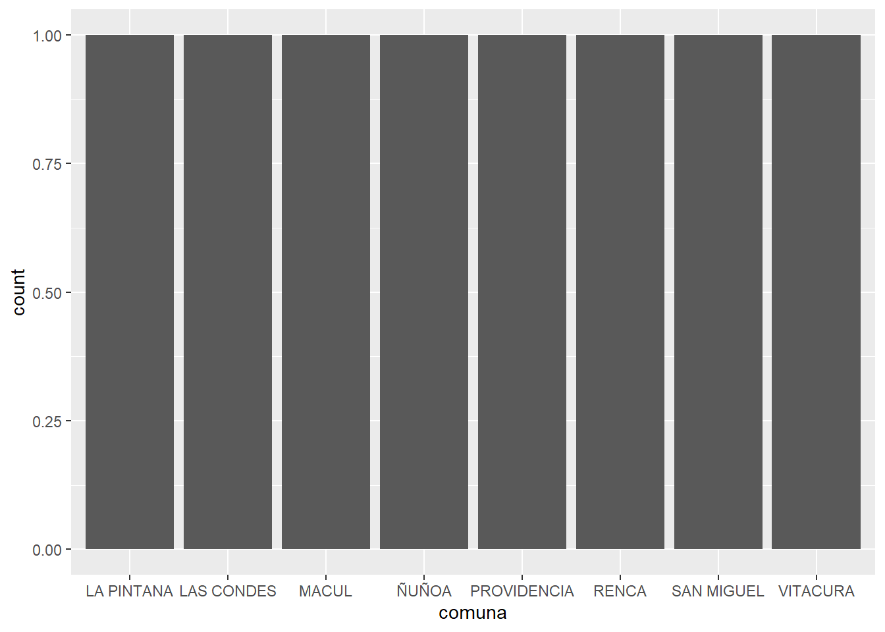

# 1. Exploración inicial ----
options(scipen=999)
rm(list=ls()) # borrar todos los objetos en el espacio de trabajo
pacman::p_load(dplyr, sjmisc, car, sjlabelled, stargazer, haven, tidyverse, readxl)
setwd("C:/Users/arell/OneDrive/Documentos/GitHub/r-uah-practico/input")
library(readxl)
datos <- read_excel("base.xlsx", sheet = "areaverde-hab")
View(datos)
view(datos)
dim(datos)[1] 117 12# 2. Selección de variables ----
proc_data <- datos %>% select(Comuna,
`Superficie de Área Verde (m2)`,
`Superficie Plazas (m2)`,
`BPU_29 Superficie de Área Verde por Habitantes (m2/Hab)`,
Región,
Cod_Ciudad)
## 2. 1 Comprobar ----
names(proc_data)[1] "Comuna"
[2] "Superficie de Área Verde (m2)"
[3] "Superficie Plazas (m2)"
[4] "BPU_29 Superficie de Área Verde por Habitantes (m2/Hab)"
[5] "Región"
[6] "Cod_Ciudad" sjlabelled::get_label(proc_data) #Observar las etiquetas de las variables Comuna
""
Superficie de Área Verde (m2)
""
Superficie Plazas (m2)
""
BPU_29 Superficie de Área Verde por Habitantes (m2/Hab)
""
Región
""
Cod_Ciudad
"" view(proc_data) #Ver data procesada
proc_data <- proc_data %>% dplyr::filter(Cod_Ciudad==13001) #Filtrar por región (metropolitana)
# PROCESAMIENTO -----
frq(proc_data$`BPU_29 Superficie de Área Verde por Habitantes (m2/Hab)`)x <numeric>
# total N=47 valid N=47 mean=6.05 sd=4.32
Value | N | Raw % | Valid % | Cum. %
------------------------------------
1.55 | 1 | 2.13 | 2.13 | 2.13
1.78 | 1 | 2.13 | 2.13 | 4.26
1.97 | 1 | 2.13 | 2.13 | 6.38
2.03 | 1 | 2.13 | 2.13 | 8.51
2.41 | 1 | 2.13 | 2.13 | 10.64
2.44 | 1 | 2.13 | 2.13 | 12.77
2.61 | 1 | 2.13 | 2.13 | 14.89
2.69 | 1 | 2.13 | 2.13 | 17.02
3.20 | 1 | 2.13 | 2.13 | 19.15
3.30 | 1 | 2.13 | 2.13 | 21.28
3.47 | 1 | 2.13 | 2.13 | 23.40
3.63 | 2 | 4.26 | 4.26 | 27.66
3.74 | 1 | 2.13 | 2.13 | 29.79
3.76 | 1 | 2.13 | 2.13 | 31.91
3.79 | 1 | 2.13 | 2.13 | 34.04
3.96 | 1 | 2.13 | 2.13 | 36.17
4.03 | 1 | 2.13 | 2.13 | 38.30
4.07 | 1 | 2.13 | 2.13 | 40.43
4.14 | 1 | 2.13 | 2.13 | 42.55
4.36 | 1 | 2.13 | 2.13 | 44.68
4.41 | 1 | 2.13 | 2.13 | 46.81
4.58 | 1 | 2.13 | 2.13 | 48.94
4.63 | 1 | 2.13 | 2.13 | 51.06
4.64 | 1 | 2.13 | 2.13 | 53.19
4.71 | 1 | 2.13 | 2.13 | 55.32
4.75 | 1 | 2.13 | 2.13 | 57.45
4.87 | 1 | 2.13 | 2.13 | 59.57
4.90 | 1 | 2.13 | 2.13 | 61.70
5.25 | 1 | 2.13 | 2.13 | 63.83
5.50 | 1 | 2.13 | 2.13 | 65.96
5.66 | 1 | 2.13 | 2.13 | 68.09
5.94 | 1 | 2.13 | 2.13 | 70.21
6.03 | 1 | 2.13 | 2.13 | 72.34
6.88 | 1 | 2.13 | 2.13 | 74.47
6.94 | 1 | 2.13 | 2.13 | 76.60
7.17 | 1 | 2.13 | 2.13 | 78.72
7.29 | 1 | 2.13 | 2.13 | 80.85
7.34 | 1 | 2.13 | 2.13 | 82.98
9.46 | 1 | 2.13 | 2.13 | 85.11
10.78 | 1 | 2.13 | 2.13 | 87.23
13.99 | 1 | 2.13 | 2.13 | 89.36
14.58 | 1 | 2.13 | 2.13 | 91.49
14.94 | 1 | 2.13 | 2.13 | 93.62
15.21 | 1 | 2.13 | 2.13 | 95.74
18.58 | 1 | 2.13 | 2.13 | 97.87
18.67 | 1 | 2.13 | 2.13 | 100.00
<NA> | 0 | 0.00 | <NA> | <NA>proc_data <- proc_data %>% rename("comuna"=Comuna,
"region"=Región,
"sup_averde"=`Superficie de Área Verde (m2)`,
"sup_plaza"=`Superficie Plazas (m2)`,
"sup_hab"=`BPU_29 Superficie de Área Verde por Habitantes (m2/Hab)`)
proc_data2 <- proc_data %>% select(comuna,
sup_averde,
sup_plaza)
# Filtrar el dataframe para incluir solo las filas donde la columna "comuna" coincide con algunas comunas específicas
proc_data2 <- filter(proc_data2, comuna %in% c("PROVIDENCIA",
"SAN MIGUEL",
"LAS CONDES",
"VITACURA",
"ÑUÑOA",
"RENCA",
"LA PINTANA",
"MACUL"))
proc_data3 <- proc_data %>% select(comuna,
sup_hab)
frq(proc_data2$sup_averde)x <numeric>
# total N=8 valid N=8 mean=954062.38 sd=672764.98
Value | N | Raw % | Valid % | Cum. %
---------------------------------------
2.13e+05 | 1 | 12.50 | 12.50 | 12.50
4.81e+05 | 1 | 12.50 | 12.50 | 25.00
5.08e+05 | 1 | 12.50 | 12.50 | 37.50
6.11e+05 | 1 | 12.50 | 12.50 | 50.00
6.73e+05 | 1 | 12.50 | 12.50 | 62.50
1.43e+06 | 1 | 12.50 | 12.50 | 75.00
1.59e+06 | 1 | 12.50 | 12.50 | 87.50
2.12e+06 | 1 | 12.50 | 12.50 | 100.00
<NA> | 0 | 0.00 | <NA> | <NA>frq(proc_data2$sup_plaza)x <numeric>
# total N=8 valid N=8 mean=345305.04 sd=172911.15
Value | N | Raw % | Valid % | Cum. %
---------------------------------------
1.12e+05 | 1 | 12.50 | 12.50 | 12.50
2.58e+05 | 1 | 12.50 | 12.50 | 25.00
2.63e+05 | 1 | 12.50 | 12.50 | 37.50
2.99e+05 | 1 | 12.50 | 12.50 | 50.00
3.00e+05 | 1 | 12.50 | 12.50 | 62.50
3.66e+05 | 1 | 12.50 | 12.50 | 75.00
4.74e+05 | 1 | 12.50 | 12.50 | 87.50
6.91e+05 | 1 | 12.50 | 12.50 | 100.00
<NA> | 0 | 0.00 | <NA> | <NA>frq(proc_data3$sup_hab)x <numeric>
# total N=47 valid N=47 mean=6.05 sd=4.32
Value | N | Raw % | Valid % | Cum. %
------------------------------------
1.55 | 1 | 2.13 | 2.13 | 2.13
1.78 | 1 | 2.13 | 2.13 | 4.26
1.97 | 1 | 2.13 | 2.13 | 6.38
2.03 | 1 | 2.13 | 2.13 | 8.51
2.41 | 1 | 2.13 | 2.13 | 10.64
2.44 | 1 | 2.13 | 2.13 | 12.77
2.61 | 1 | 2.13 | 2.13 | 14.89
2.69 | 1 | 2.13 | 2.13 | 17.02
3.20 | 1 | 2.13 | 2.13 | 19.15
3.30 | 1 | 2.13 | 2.13 | 21.28
3.47 | 1 | 2.13 | 2.13 | 23.40
3.63 | 2 | 4.26 | 4.26 | 27.66
3.74 | 1 | 2.13 | 2.13 | 29.79
3.76 | 1 | 2.13 | 2.13 | 31.91
3.79 | 1 | 2.13 | 2.13 | 34.04
3.96 | 1 | 2.13 | 2.13 | 36.17
4.03 | 1 | 2.13 | 2.13 | 38.30
4.07 | 1 | 2.13 | 2.13 | 40.43
4.14 | 1 | 2.13 | 2.13 | 42.55
4.36 | 1 | 2.13 | 2.13 | 44.68
4.41 | 1 | 2.13 | 2.13 | 46.81
4.58 | 1 | 2.13 | 2.13 | 48.94
4.63 | 1 | 2.13 | 2.13 | 51.06
4.64 | 1 | 2.13 | 2.13 | 53.19
4.71 | 1 | 2.13 | 2.13 | 55.32
4.75 | 1 | 2.13 | 2.13 | 57.45
4.87 | 1 | 2.13 | 2.13 | 59.57
4.90 | 1 | 2.13 | 2.13 | 61.70
5.25 | 1 | 2.13 | 2.13 | 63.83
5.50 | 1 | 2.13 | 2.13 | 65.96
5.66 | 1 | 2.13 | 2.13 | 68.09
5.94 | 1 | 2.13 | 2.13 | 70.21
6.03 | 1 | 2.13 | 2.13 | 72.34
6.88 | 1 | 2.13 | 2.13 | 74.47
6.94 | 1 | 2.13 | 2.13 | 76.60
7.17 | 1 | 2.13 | 2.13 | 78.72
7.29 | 1 | 2.13 | 2.13 | 80.85
7.34 | 1 | 2.13 | 2.13 | 82.98
9.46 | 1 | 2.13 | 2.13 | 85.11
10.78 | 1 | 2.13 | 2.13 | 87.23
13.99 | 1 | 2.13 | 2.13 | 89.36
14.58 | 1 | 2.13 | 2.13 | 91.49
14.94 | 1 | 2.13 | 2.13 | 93.62
15.21 | 1 | 2.13 | 2.13 | 95.74
18.58 | 1 | 2.13 | 2.13 | 97.87
18.67 | 1 | 2.13 | 2.13 | 100.00
<NA> | 0 | 0.00 | <NA> | <NA>sjmisc::descr(proc_data2,
show = c("label","range", "mean", "sd", "NA.prc", "n")) # Selecciona estadísticos
## Basic descriptive statistics
var label n NA.prc mean sd
sup_averde sup_averde 8 0 954062.4 672765.0
sup_plaza sup_plaza 8 0 345305.0 172911.1
range
1908565.07 (212503.55-2121068.62)
578912.8 (111933.5-690846.3)sjmisc::descr(proc_data3,
show = c("label","range", "mean", "sd", "NA.prc", "n"))
## Basic descriptive statistics
var label n NA.prc mean sd range
sup_hab sup_hab 47 0 6.05 4.32 17.12 (1.55-18.67)summarytools::dfSummary(proc_data3, plain.ascii = FALSE)### Data Frame Summary
#### proc_data3
**Dimensions:** 47 x 2
**Duplicates:** 0
------------------------------------------------------------------------------------------------------------------
No Variable Stats / Values Freqs (% of Valid) Graph Valid Missing
---- ------------- ----------------------- -------------------- ----------------------------- ---------- ---------
1 comuna\ 1\. BUIN\ 1 ( 2.1%)\ \ 47\ 0\
[character] 2\. CALERA DE TANGO\ 1 ( 2.1%)\ \ (100.0%) (0.0%)
3\. CERRILLOS\ 1 ( 2.1%)\ \
4\. CERRO NAVIA\ 1 ( 2.1%)\ \
5\. COLINA\ 1 ( 2.1%)\ \
6\. CONCHALÍ\ 1 ( 2.1%)\ \
7\. EL BOSQUE\ 1 ( 2.1%)\ \
8\. EL MONTE\ 1 ( 2.1%)\ \
9\. ESTACIÓN CENTRAL\ 1 ( 2.1%)\ \
10\. HUECHURABA\ 1 ( 2.1%)\ \
[ 37 others ] 37 (78.7%) IIIIIIIIIIIIIII
2 sup_hab\ Mean (sd) : 6 (4.3)\ 46 distinct values \ \ :\ 47\ 0\
[numeric] min < med < max:\ \ \ :\ (100.0%) (0.0%)
1.6 < 4.6 < 18.7\ \ \ :\
IQR (CV) : 3.3 (0.7) : :\
: : : : \ \ \ \ \ \ : \ \ .
------------------------------------------------------------------------------------------------------------------proc_data2 %>% ggplot(aes(x = comuna)) +
geom_bar()